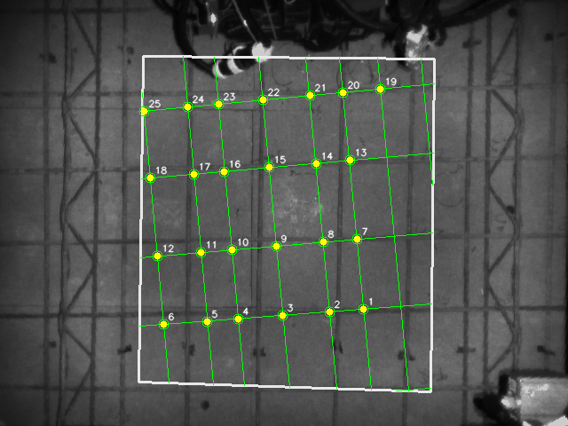
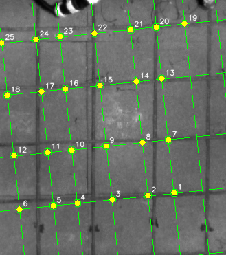

基准
全流程
当前主链：组合响应、局部峰值、连续钢筋条/ridge 验证、spacing 收束；梁筋±10cm范围只在最终点级过滤。
方案内部基准。
mean 1006.13 ms
median 1006.13 ms
25 points
scheme drift max 0.00 px
reference drift max 0.00 px


线族明细
[{"angle_deg": 84.0, "line_rhos": [-311.574, -263.424, -222.148, -184.263, -131.331, -80.51, -45.556, 4.281], "peak_rhos": [-312.0, -262.0, -252.0, -246.0, -238.0, -222.0, -219.0, -207.0, -192.0, -186.0, -184.0, -161.0, -145.0, -132.0, -128.0, -117.0, -106.0, -99.0, -81.0, -74.0, -63.0, -46.0, -44.0, -22.0, -19.0, -2.0, 5.0, 24.0, 26.0], "continuous_rhos": [-311.574, -263.424, -246.803, -238.174, -222.148, -218.66, -184.263, -161.417, -131.331, -128.035, -106.882, -99.615, -80.51, -73.578, -63.085, -45.556, -22.109, -18.199, -1.659, 4.281]}, {"angle_deg": 174.0, "line_rhos": [-398.32, -305.387, -227.295, -138.466, -62.242], "peak_rhos": [-397.0, -392.0, -310.0, -306.0, -295.0, -227.0, -213.0, -139.0, -132.0, -62.0, -20.0, -16.0, -12.0], "continuous_rhos": [-398.32, -310.95, -305.387, -295.216, -227.295, -213.19, -138.466, -131.984, -62.242]}]